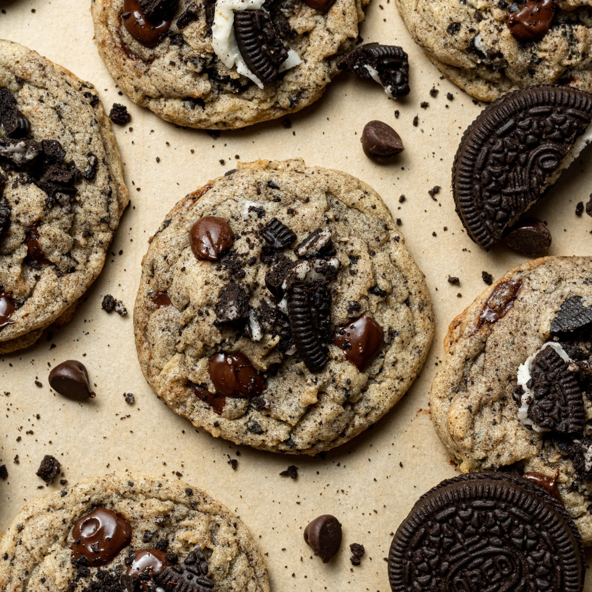

Oreo Cookie

Ingredients
- All Purpose Flour
- Baking Soda
- Salt
- Chopped Oreos
- Semi-Sweet Chocolate Chips
- Unsalted Butter
- Brown Sugar
- Granulated Sugar
- Large Eggs
- Vanilla Extract
- Preheat the oven to 350º F.
- In a mixing bowl, combine the flour, baking soda, salt, Oreos, and chocolate chips. Set aside.
- In a large mixing bowl, beat the butter, brown sugar, and granulated sugar with an electric mixer
until blended, about 1 minute. Add the eggs and vanilla, beat again until mixed
- Gradually add in the flour mixture, mixing on low or with a spatual just until combined.
- Use a cookie scoop to form dough balls. Press 6-8 cookies on a tray, about 3 inches apart.
Bake for 10-12 minutes, or until the edges are light brown and the center is puffy.
- Allow cookies to cool for 15 minutes before removing them from the sheet. Store in an air tight container.